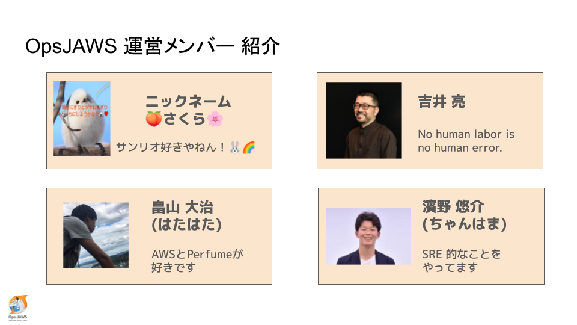
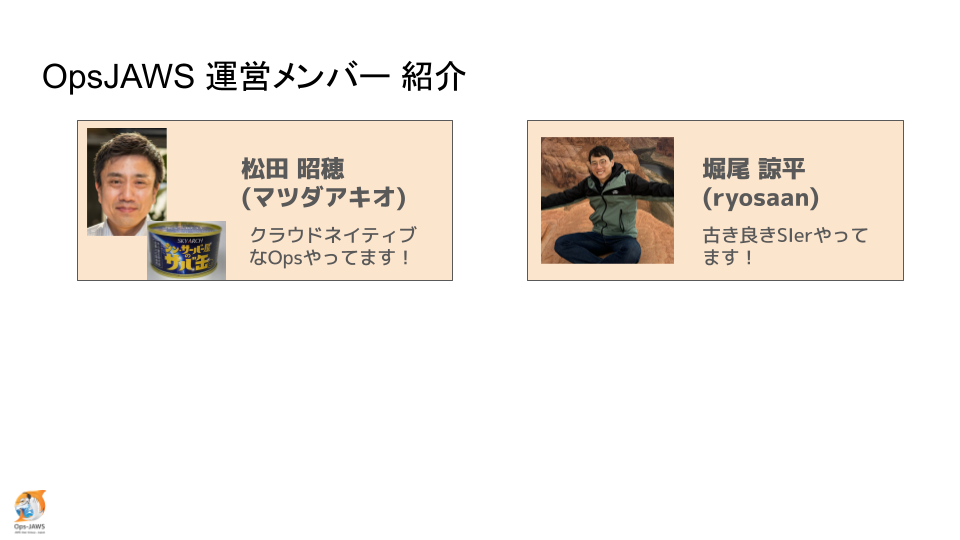
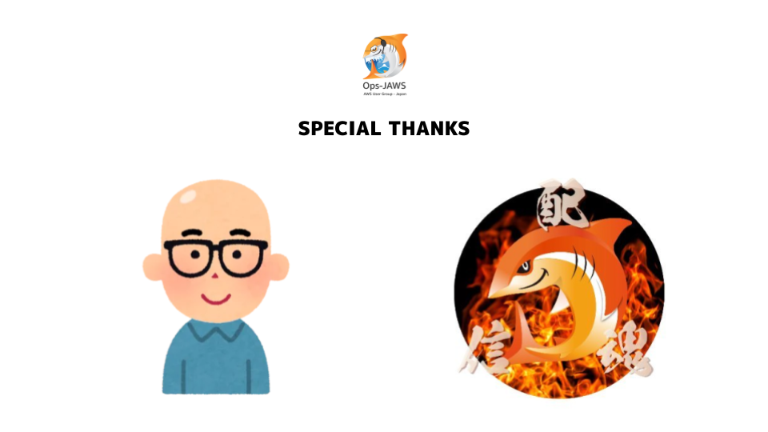
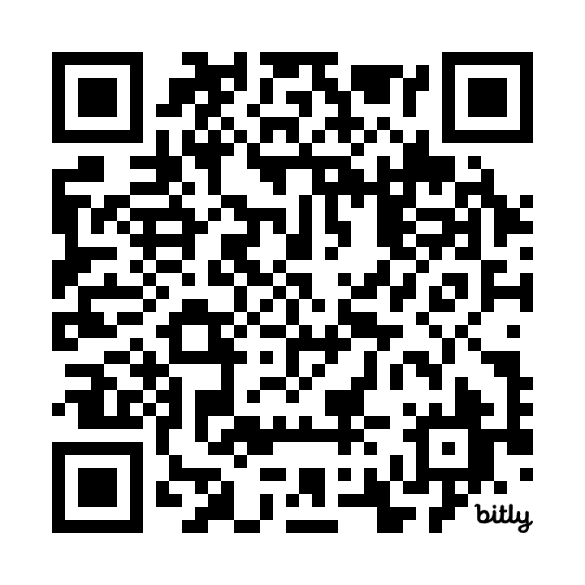
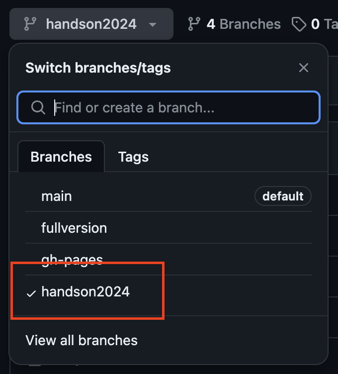

class: center, middle background-image: url(ops-jaws-logo.png) # 2024-04-16 Systems Manager ハンズオン説明 --- background-image: url(ops-jaws-logo.png) # 時間割 | 時間 | 内容 | 登壇者 | | --- | --- | --- | | 19:00 - 19:10 | OpsJAWS 運営からハンズオンの説明 | OpsJAWS運営一同 | | 19:10 - 20:10 | ハンズオン実施 | 皆様 | | 20:10 - 20:30 | ハンズオン感想、Systems Manager に関する情報交換 | 皆様、OpsJAWS運営一同 | --- background-image: url(ops-jaws-logo.png) # ルール - 関係者の人種、性別、性的指向、身体的特徴、見た目、政治、宗教（または無宗教）などに係る表現は、いかなる場合も適切ではありません。 - JAWS-UG は No sell, No Job です。イベントの趣旨と関係のない宣伝行為・採用活動・ネットワーキングのみを目的としたご参加はご遠慮ください。 ルールに違反する方は参加をお断りする場合がございます。 --- background-image: url(ops-jaws-logo.png) # マナー - あなたのクリエイティブで前向きな発言がイベントをより楽しくします。発表者や質問者に対して疑問や意見がある場合は批判や罵り・嘲りではなく提案と課題解決の態度でポジティブな発言を心がけましょう。 - 全てのイベントは有志のボランティアにより非営利目的にて運営され、いつでもあなたの手助けを必要としています。お気付きの点があればぜひご協力をお願いいたします。 - 私たちはコミュニティへの貢献を通じて社会からの信頼を得ることがより良いビジネスに繋がり、より自分らしい働き方を見つける手段になると信じています。 - AWSのユーザーグループは日本中、世界中に存在し、あなたの参加を待っています。是非コミュニティを通じて世界中の仲間と繋がりましょう。 --- background-image: url(ops-jaws-logo.png) # OpsJAWS 運営メンバー <div align="center">  </div> --- background-image: url(ops-jaws-logo.png) # OpsJAWS 運営メンバー <div align="center">  </div> --- background-image: url(ops-jaws-logo.png) # Special Thanks <div align="center">  </div> --- background-image: url(ops-jaws-logo.png) # Special Thanks ハンズオンを技術的にサポートしてくれる方々に感謝いたします。（敬称略） - [平木佳介](https://dev.classmethod.jp/author/hiraki-keisuke/) - [深澤俊](https://twitter.com/shun_quartet) - [前原良美](https://twitter.com/yoshimi0227_) - [大島悠司](https://twitter.com/yuj1osm) - [鈴木進吾](https://twitter.com/mominosin) --- background-image: url(ops-jaws-logo.png) # ハンズオン手順書 https://github.com/YoshiiRyo1/systemsmanager-handson/tree/handson2024 を開いてください。 <div align="center">  </div> --- background-image: url(ops-jaws-logo.png) # ブランチの選択 ブランチが **handson2024** であることを確認してください。 <div align="center">  </div> --- background-image: url(ops-jaws-logo.png) # AWS アカウントのお知らせ AWSアカウント: <font size="7">058264267108</font> IAM ユーザー: <font size="7">入館申請用メールアドレス</font> 初期パスワード: <font size="7">ojP9APtrX[Z,Wdbr</font> ※ パスワード1文字目は、小文字の「o」（オー）です。 ※ 性善説で成り立っているので他人のユーザーは使わないでください --- background-image: url(ops-jaws-logo.png) # フィードバックのお願い 本日気がついたことをフィードバックお願いいたします。 誤字脱字といった細かいことから、ハンズオンの改善点まで、何でも構いません。 ボランティアで運営しているため、皆様のフィードバックが運営の励みになります。 Pull Request や Issue でお願いいたします。 https://github.com/YoshiiRyo1/systemsmanager-handson/tree/handson2024